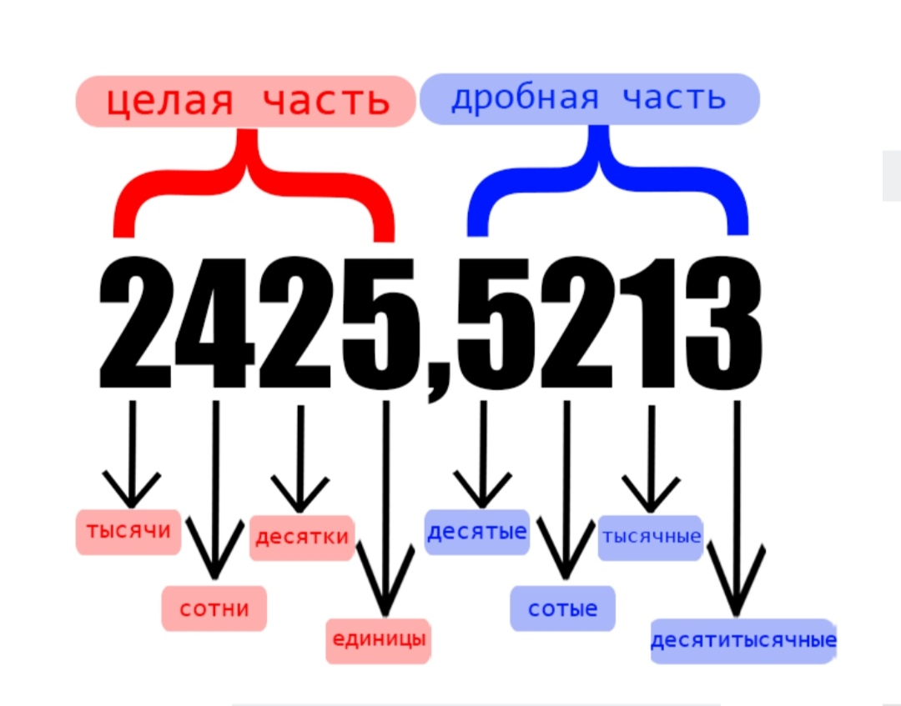
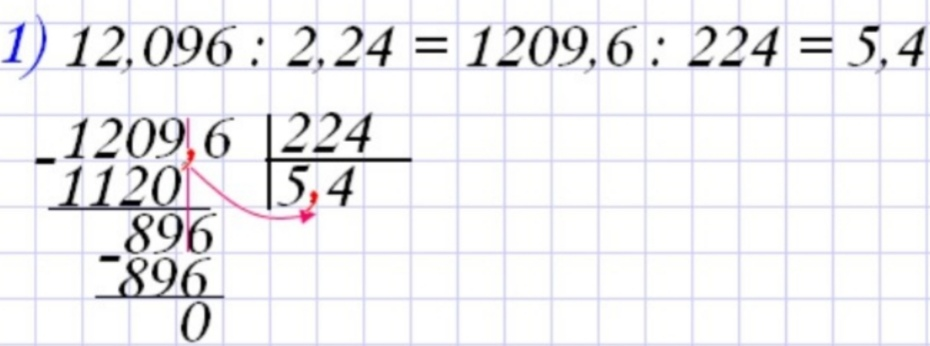

Задание №6
Инструкция к выполнению
Обыкновенные дроби
Дробь — это деление двух чисел, как правило незавершённое, потому что деление не получится довести до конца, как бы не хотелось. Например, если делить 3 на 7 столбиком, то к конечному результату это не приведёт.
К тому же, с такими длинными числами не удобно работать. Поэтому, число 3/7 удобнее оставить в виде дроби.
Познакомимся с терминологией: число над дробной чертой называют числитель, под чертой — знаменатель.
Если числитель дроби меньше, чем знаменатель, то дробь называют правильной, напротив — неправильной.У дробей есть, так называемое, «основное свойство»:
❗ Числитель и знаменатель дроби можно одновременно целиком делить или умножать на одно и то же число. Значение дроби при этом не изменится.
Этим свойством удобно пользоваться при умножении или делении дробей. Рассмотрим следующий пример:
Так как дроби здесь делятся, сначала нам необходимо перевернуть вторую дробь, а затем умножать их друг на друга:
На этом этапе заметим, что числа 7 и 21 оба делятся на 7. Так как они находятся с разных сторон от дробной черты, то воспользуемся основным свойством дроби и разделим числитель и знаменатель на 7:
Выражение сильно упрощается, но если внимательно посмотреть на результат, то становится понятно, что необходимо ещё раз применить основное свойство дроби, но уже с числами 3 и 15:
Теперь вместо огромных чисел, которые мы бы получили, имеем красивую маленькую дробь. Далее делим столбиком 6 на 5, и то, что получилось, записываем в бланк ответов.
Алгоритм действий:
- Найдём общий знаменатель для дробей
- Домножим дроби на недостающие множители
- Запишем выражение в одну дробь
- Сократим ответ, если это необходимо
- Приведём ответ в вид десятичной дроби, если задание не требует иного
Знаменателями этих дробей являются числа 8 и 10. Их общий знаменатель должен делиться на 8 и 10 без остатка. Например, число 80 делится и на 8, и на 10 без остатка, но и число 40 тоже подходит.
Первый шаг:
Второй шаг:
Третий шаг:
Заметим, что в случае со знаменателем 80 в конце третьего шага дробь состоит из бóльших чисел, в отличии от решения со знаменателем 40. Отсюда делаем вывод, что брать наименьший общий знаменатель удобнее.
Четвёртый шаг:
Пятый шаг:
Если встретилась, так называемая, «трёхэтажная дробь» — помните, что любую дробную черту всегда можно заменить на обычный и привычный знак деления:
Смешанные числа
Если на экзамене попадается число такого вида: 2 3/7, то это — смешанное число. У него одновременно есть и целая и дробная части, причем они складываются друг с другом.
Если в ходе примера такие числа надо сложить или вычесть, то в вид неправильной дроби их лучше не приводить. Дробная и целая части решаются отдельно, причем сначала решается дробная.
В этом случае единица из целой части превращается в дробь, которая прибавляется к дробной части:
Умножать и делить смешанные числа можно только после того, как они будут переведены в неправильные дроби:
Десятичные дроби
Десятичными дробями называют обыкновенные дроби, у которых знаменателем является любая степень 10. Обычно, их записывают с помощью запятой, поэтому школьникам они очень нравятся, так как похожи на обычные двухзначные, трехзначные и др. целые числа. Однако, это сходство часто вводит учеников в заблуждение.
Для начала определим, для чего ставится запятая:
Запятая отделяет целую часть от дробной. Соответственно даёт понять, в каком разряде находится та или иная цифра.

Что бы не перепутать порядки, при сложении и вычитании десятичных дробей в пятом классе учат правило «запятая под запятой». То есть, десятичные дроби складываются и вычитаются столбиком, по обычным правилам, с единственной поправкой, что запятые в примере должны находиться друг над другом:
+ 2,149
20,549
И если числу не хватает цифр после запятой, то для удобства сложения или вычитания в конце ему «дорисовываются» нули.
Умножать такие дроби ещё проще. Сначала забываем про запятые и умножаем числа, как обычные многозначные. А после про запятые нужно вспомнить и оставить в ответе столько же цифр после запятой, сколько было суммарно. Например:
× 4,6
1470
980
11,270
Если в конце числа остаются нули, то писать их в ответ не надо.
А теперь самое интересное — деление десятичных дробей. Дело в том, что на дробь делить никто не умеет. Всегда применяются какие-то хитрости, которые приводят нас либо к переворачиванию дробей, либо к делению на целое число.
В данном случае, будем делить на целое число. Нам необходимо перенести запятую одновременно и у делимого, и у делителя так, чтобы делитель стал целым. Например:
Если знаков после запятой не хватает, то снова добавляем нули. Как только получился целый делитель, делим числа обычным столбиком:

Не забываем ставить запятую в ответе, когда переходим из области целых чисел.
Порядок действий
Если в примере больше, чем одно действие, то необходимо помнить о том, как правильно расставлять порядок действий.
- Умножение и деление — действия одного порядка, если их несколько в примере, то расставляем порядок действий в них слева направо.
- Сложение и вычитание — также действия одного порядка. После того, как расставлены действия над умножением и делением, ставим слева направо действия над плюсами и минусами.
- Если в примере есть скобки, то предпочтения в расстановке действий отдаётся им.
Иногда встречается такое действие, как степень. Тут нужно вспомнить, что степень показывает, сколько раз число будет умножено само на себя.
Памятка по заданию №6:
- Дробь — это деление числителя на знаменателя
- Основное свойство: можно умножать или делить числитель и знаменатель на одно и то же число
- При сложении дробей — приводим к общему знаменателю
- Трёхэтажную дробь заменяем делением
- Смешанные числа переводим в неправильные дроби для умножения/деления
- При сложении/вычитании десятичных дробей — запятая под запятой
- При умножении десятичных дробей — считаем общее количество знаков после запятой
- При делении — переносим запятую, чтобы делитель стал целым
- Сначала действия в скобках, затем умножение/деление, затем сложение/вычитание